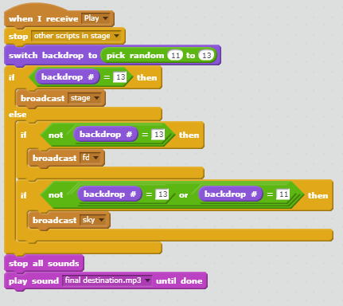

Contents
Meja Man

Description
Meja man got into a fight with Proto man! Play in a 1v1 2-D fighter with random stages with every fight. The games ends when one of the players health bar depletes. The games is only as hard as your opponent!
Refection
I was inspired by the new Super Smash Bros. game coming out soon and I wanted to recreate a game similar to that of. I was proud of the title screen and the movement of each player, but I had difficulties with implementing a gravity feeling for jumping and the changing of every single sprite. The process was tedious but I was able to push through.

This algorithm allows the animation of
Meja Man in the home screen.
The More Block algorithm allows Meja
Man to jump.
Pokemon CYOA
Take an adventure in the world of Pokemon to become the champion of the Hoenn region or a Pokemon collecting master. Choose a starter, battle your rival, and maybe even catch a legendary pokemon, all in choose your own adventure version of the classic Pokemon games.

Reflection
One developmental process in the coding of this choose your own adventure project that I used was trial and error. I would first write all of the code of the program then test it to fix any of the errors that may occur but also improve the code by finding more effective ways to shorten and simplify it. Another process I used to improve this project is revisiting the code as I continued to create the program and story. As I was creating programming the project, I would come across new techniques and return back to the older codes to implement them there. One difficulty I had was trying to set a variable that would allow one's decision to affect them later in the adventure. I learn that setting variables to global allows thoses variables to be used in other functions. Organizing scenes of your story into functions is a form of procedural abstraction because it seperates the user from code into coherent stories. It helps them follow the code and differentiates between each choice and path taken. The advantages of abstracting your scenes into functions are that it helps organizes thoughts into specific chunks of code rather than all confusing and all together. One story I liked was the Peppa the pig because it was a very cute and funny story.